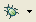
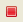

This page describes how to use the Console View for the Aptana JavaScript debugger.
Contents |
Introduction
Use the Console View (shown below) to find out the value of a variable or object at a given time. The value will be written out to the Console.
{kind=link}
Instructions
This section describes how to do common logging tasks.
Adding a new log message to the Console View
You will need to have the debugger set up to run to use the Console View. See Running the debugger for help.
To add a new log message to the Console View:
- Open your file in the appropriate Aptana Editor.
- Navigate to the function or place in your code where you want to add the log message.
- Add the following line of code to your code:
aptana.log(logMessage);. logMessage should be the message that you want to be printed out to the Console View. (e.g.aptana.log("Now is " + tDate);). - Click the Debug button  to run/debug your code in your browser.
{kind=link}
The log entry that you added will print out to the Console View as it is executed. Click the Terminate button  to stop the execution of your code.
{kind=link}
Adding other log messages
window.dump()
In addition to aptana.log, you can also use window.dump(), to print out to the console. The window.dump() command is compatible with many currently popular JavaScript toolkits.
aptana.trace()
Use the aptana.trace() command to generate a stack trace in the Console.